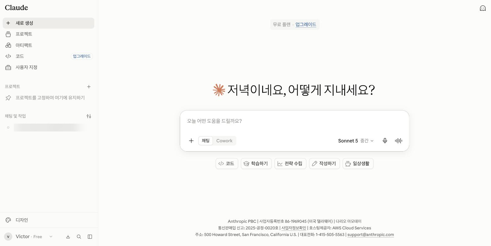
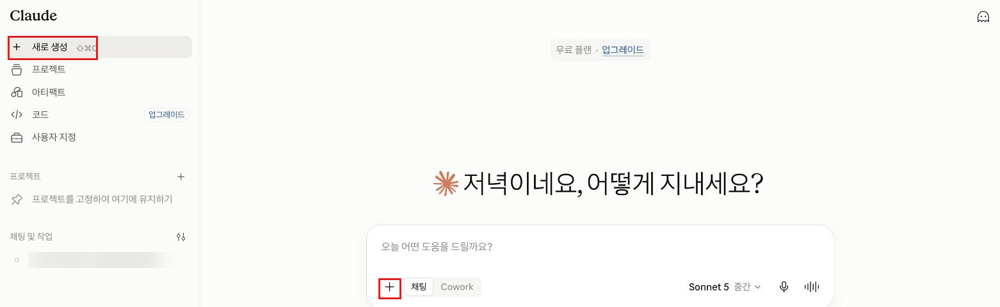
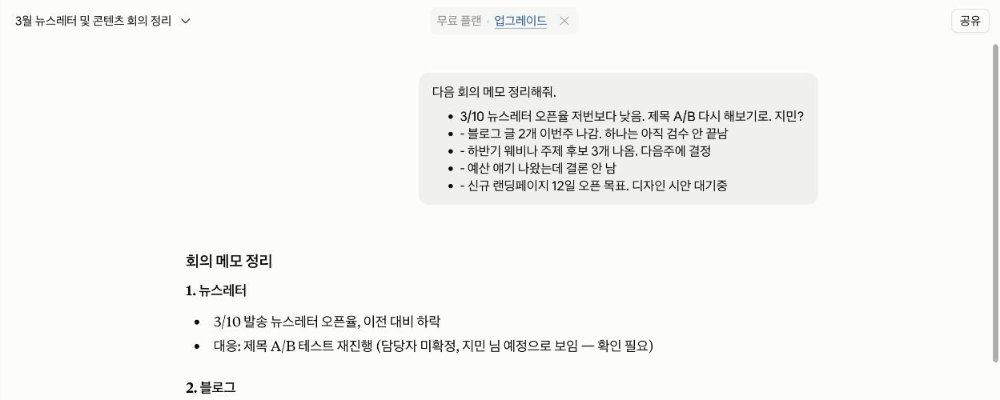
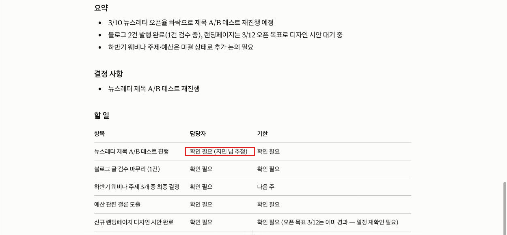
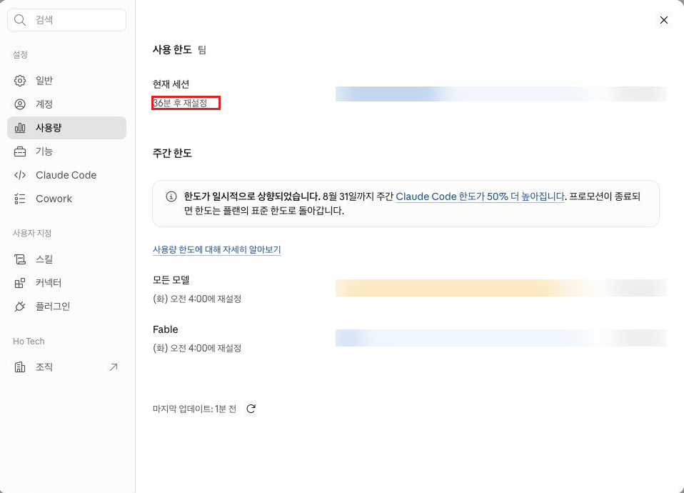

Claude · 초급 · 모듈 01
Claude에 로그인해 첫 대화를 시작하고, 같은 과제를 막연한 프롬프트와 구체적인 프롬프트로 각각 물어 결과가 어떻게 달라지는지 직접 확인합니다.
이 모듈을 마치면 다음을 할 수 있습니다.
| 항목 | 내용 |
|---|---|
| 필요 플랜 | 없음. Free 계정으로 충분합니다. Pro·Max·Team·Enterprise 계정도 동일하게 진행됩니다. |
| 설치 | 불필요. 웹 브라우저만 있으면 됩니다. 이 모듈의 화면 설명은 웹(claude.ai) 기준입니다. |
| 계정 조건 | 지원 지역에 있어야 하며, 만 18세 이상이어야 합니다. (출처: support.claude.com/ko/articles/8114491, 2026-08-19 확인) |
| 사전 지식 | 없음. 이 모듈이 커리큘럼의 첫 문서입니다. |
| 예상 사용량 | 프롬프트 4회 정도. 사용량은 메시지 수가 아니라 대화 길이와 복잡도에 따라 달라지므로 정확한 소모량을 미리 계산할 수는 없습니다. 5시간 세션 한도 안에서 여유롭게 끝나는 분량입니다. |
이 문서는 초급 트랙 규칙에 따라 설정을 바꾸지 않습니다. 계정마다 화면 표시 언어가 다를 수 있으므로, 번역에 따라 달라지는 문구보다는 화면 속 위치를 기준으로 설명합니다. 한국어 표기가 공식 문서로 확인된 경우에만 따옴표로 인용했고, 확인되지 않은 것은 공식 자료 미확인으로 남겨 두었습니다.
| 이 문서에서 부르는 이름 | 확인 상태 |
|---|---|
| 왼쪽 아래 프로필 아이콘 | 확인됨 (출처: support.claude.com/ko/articles/10769299, 2026-08-19 확인) |
| "설정" > "사용량" | 확인됨 (출처: claude.com/pricing, 2026-08-19 확인) |
| 입력창의 "+" 아이콘 | 확인됨 — 기호이므로 언어와 무관 (출처: support.claude.com/ko/articles/8114491, 2026-08-19 확인) |
| "제출" 버튼 | 확인됨 (출처: support.claude.com/ko/articles/8114491, 2026-08-19 확인) |
| 새 대화 시작 아이콘 | 공식 자료 미확인 — 정확한 표시 문구는 캡처 확인 후 반영 |
이 문서의 설명은 위치를 기준으로 하므로 화면 언어와 무관하게 따라갈 수 있습니다. 표시 언어를 한국어로 바꾸는 방법은 계정 설정을 변경하는 일이라 중급 모듈에서 다룹니다.
Claude에게 일을 시킬 때 결과의 질은 프롬프트의 구체성이 좌우합니다. 같은 사람이 같은 자료를 주더라도, 무엇을·어떤 상황에서·어떤 형태로 원하는지 적었느냐에 따라 나오는 결과물이 달라집니다. 이 모듈의 실습은 그 차이를 직접 눈으로 확인하는 것이 목적입니다.
프롬프트(prompt)는 Claude에게 보내는 요청문입니다. 공식 안내는 동료나 친구에게 말하듯 자연스러운 대화체로 쓰기를 권하며, 간단한 질문부터 여러 단계로 이뤄진 복잡한 요청까지 모두 프롬프트에 해당한다고 설명합니다. (출처: support.claude.com/ko/articles/8114491, 2026-08-19 확인) 특별한 문법이나 명령어를 외울 필요는 없습니다.
초급 단계에서는 아래 3가지만 챙기면 충분합니다.
| 요소 | 무엇을 적는가 | 빠지면 생기는 일 |
|---|---|---|
| 과제 | 무엇을 해 달라는 것인지 | Claude가 요약인지 초안 작성인지 검토인지 스스로 골라 버립니다 |
| 맥락 | 어떤 상황이고 누가 읽는지 | 대상 독자에 맞지 않는 어투·분량이 나옵니다 |
| 출력 형식 | 어떤 모양으로 받고 싶은지 (길이·구성·항목) | 매번 다른 형식으로 나와 그대로 쓰기 어렵습니다 |
업무 문서를 다룰 때는 "준 자료에 없는 내용은 지어내지 말고, 불명확한 항목은 '확인 필요'로 표시해 달라"는 문장을 프롬프트에 넣어 두면 검토 시간이 크게 줄어듭니다. 이 모듈의 예제 프롬프트에도 넣어 두었습니다.
첫 응답이 마음에 들지 않는 것은 실패가 아니라 정상입니다. 새 대화를 다시 열지 말고, 같은 대화에서 무엇을 어떻게 고쳐 달라고 이어서 말하는 편이 빠릅니다. Claude는 그 대화 안의 앞선 내용을 함께 보고 답하기 때문입니다.
Claude를 쓰다 보면 두 가지 서로 다른 한도를 만납니다. 원인이 다르므로 대처도 다릅니다.
| 구분 | 무엇을 제한하는가 | 도달하면 |
|---|---|---|
| 사용량 한도 (공식 문서 표기: "사용 제한") | 일정 시간 동안 쓸 수 있는 총량. 5시간 단위로 초기화되고, 유료 플랜은 주간 한도가 추가됩니다. 웹·데스크톱·모바일·Claude Code 사용량이 하나의 풀에서 함께 차감됩니다. (출처: claude.com/pricing, 2026-08-19 확인) | 초기화될 때까지 기다리거나 상위 플랜으로 올립니다. |
| 길이 한도 | 대화 하나가 담을 수 있는 정보량(컨텍스트 윈도우). 모든 개인·팀 플랜에서 20만(200K) 토큰(Claude가 글을 처리하는 단위)이며, 플랜을 올려도 늘어나지 않습니다. (출처: claude.com/pricing, 2026-08-19 확인) | 새 대화를 시작하라는 안내가 나옵니다. |
보낼 수 있는 메시지 수는 대화 길이·복잡도·선택한 모델에 따라 달라져 고정된 숫자가 없습니다. 현재 상태는 "설정" > "사용량"에서 확인합니다. (출처: claude.com/pricing, 2026-08-19 확인)
만들 결과물: 같은 회의 메모를 막연한 프롬프트와 구체적인 프롬프트로 각각 정리시켜, 두 응답을 비교한 대화 1건.
브라우저 주소창에 claude.ai를 입력하고 계정으로 로그인합니다. 사내에서 SSO(하나의 회사 계정으로 여러 서비스에 로그인하는 방식)를 쓰고 있다면 회사 계정으로 로그인합니다. 3-1에서 확인한 지원 지역·연령 조건을 충족하는지 다시 한번 확인하세요.

왼쪽 사이드바 위쪽에서 새 대화를 시작하는 아이콘을 찾아 클릭합니다. 정확한 아이콘 모양은 캡처 확인 후 반영할 예정이며, 지금은 사이드바 위쪽에서 대화 목록과 구분되는 아이콘을 찾으면 됩니다. 이미 빈 대화가 열려 있다면 이 단계는 건너뛰어도 됩니다.

아래 프롬프트를 그대로 입력창에 복사해 붙여 넣고 "제출" 버튼을 클릭합니다. 일부러 정보를 뺀 요청입니다.
다음 회의 메모 정리해줘.
- 3/10 뉴스레터 오픈율 저번보다 낮음. 제목 A/B 다시 해보기로. 지민?
- 블로그 글 2개 이번주 나감. 하나는 아직 검수 안 끝남
- 하반기 웨비나 주제 후보 3개 나옴. 다음주에 결정
- 예산 얘기 나왔는데 결론 안 남
- 신규 랜딩페이지 12일 오픈 목표. 디자인 시안 대기중
프롬프트 A의 응답을 다시 읽고, 아쉬운 점 2~3가지를 메모장에 적어 보세요. 다음 단계에서 그 메모를 그대로 활용합니다.
- 담당자 이름이 안 보인다
- 분량이 너무 길다
- 메모에 없던 내용이 들어갔다새 대화를 열지 말고 같은 대화에서 아래 프롬프트를 그대로 복사해 입력창에 붙여 넣고 "제출" 버튼을 클릭합니다. 과제·맥락·출력 형식이 모두 들어 있는 요청입니다.
같은 메모를 다시 정리해 주세요. 이번에는 아래 조건을 지켜 주세요.
[과제]
팀에 공유할 주간 회의록으로 정리해 주세요.
[맥락]
- 매주 월요일 오전에 하는 마케팅팀 주간 회의입니다.
- 읽는 사람은 회의에 참석하지 않은 팀원 5명입니다.
- 오늘은 2026년 3월 16일 월요일입니다.
[출력 형식]
- 맨 위에 3줄 이내 요약
- 그다음 "결정 사항"과 "할 일" 두 개의 목록
- "할 일"에는 담당자와 기한을 함께 적어 주세요
- 메모에 없는 내용은 지어내지 말고, 불명확한 항목은 "확인 필요"로 표시해 주세요
같은 대화에서 아래 프롬프트를 입력창에 붙여 넣고 "제출" 버튼을 클릭합니다. 전체를 다시 쓰라고 하지 않고 고칠 부분만 지정하는 것이 요령입니다.
"할 일" 목록만 다시 써 주세요.
담당자 이름을 각 줄 맨 앞에 두고, 기한이 빠른 순서대로 정렬해 주세요.
나머지 부분은 그대로 두면 됩니다.같은 대화 안에서 아래 프롬프트를 입력창에 붙여 넣고 "제출" 버튼을 클릭합니다. 이 응답이 이 모듈의 결과물입니다.
이 대화에서 내가 처음 보낸 요청과 두 번째 보낸 요청을 비교해 주세요.
두 요청의 차이가 결과물에 어떤 차이를 만들었는지 표로 정리하고,
앞으로 비슷한 업무를 맡길 때 프롬프트에 꼭 넣어야 할 항목을 3개만 뽑아 주세요.왼쪽 아래 프로필 아이콘 → "설정" > "사용량"으로 이동해 지금까지 얼마나 썼는지 확인합니다. 여기서는 보기만 하고 아무것도 바꾸지 않습니다.
개인 사용량 수치가 함께 찍히므로, 사내 공유 전에 가려도 되는 값인지 확인하세요.

같은 프롬프트를 보내도 문구는 실행할 때마다 달라집니다. 아래의 "예상 출력"은 응답 예시이며, 성공 여부는 문구가 아니라 결과물의 형태와 항목이 요청대로 나왔는지로 판단합니다.
사전 준비물: 로그인한 Claude 계정, 새 대화 1개. 파일 업로드는 필요 없습니다.
다음 회의 메모 정리해줘.
- 3/10 뉴스레터 오픈율 저번보다 낮음. 제목 A/B 다시 해보기로. 지민?
- 블로그 글 2개 이번주 나감. 하나는 아직 검수 안 끝남
- 하반기 웨비나 주제 후보 3개 나옴. 다음주에 결정
- 예산 얘기 나왔는데 결론 안 남
- 신규 랜딩페이지 12일 오픈 목표. 디자인 시안 대기중예상 출력(응답 예시): 메모를 문장으로 풀어 쓴 정리본이 나옵니다. 다만 누가 읽는 문서인지, 어떤 형식으로 받고 싶은지 적지 않았으므로 분량과 구성은 실행할 때마다 달라집니다. 담당자·기한이 빠지거나, 메모에 없던 배경 설명이 덧붙는 경우도 있습니다.
성공 확인 방법: 응답이 도착했다면 이 단계는 성공입니다. 내용이 마음에 들지 않는 것이 정상이며, 그 아쉬움이 다음 프롬프트의 재료입니다.
사전 준비물: 프롬프트 A를 보낸 같은 대화.
같은 메모를 다시 정리해 주세요. 이번에는 아래 조건을 지켜 주세요.
[과제]
팀에 공유할 주간 회의록으로 정리해 주세요.
[맥락]
- 매주 월요일 오전에 하는 마케팅팀 주간 회의입니다.
- 읽는 사람은 회의에 참석하지 않은 팀원 5명입니다.
- 오늘은 2026년 3월 16일 월요일입니다.
[출력 형식]
- 맨 위에 3줄 이내 요약
- 그다음 "결정 사항"과 "할 일" 두 개의 목록
- "할 일"에는 담당자와 기한을 함께 적어 주세요
- 메모에 없는 내용은 지어내지 말고, 불명확한 항목은 "확인 필요"로 표시해 주세요예상 출력(응답 예시): 짧은 요약 → "결정 사항" 목록 → "할 일" 목록 순서로 정리된 회의록이 나옵니다. 담당자가 불분명한 뉴스레터 제목 A/B 항목과 결론이 나지 않은 예산 항목은 "확인 필요"로 표시됩니다.
성공 확인 방법: 아래 4가지가 모두 보이면 성공입니다.
사전 준비물: 프롬프트 B를 보낸 같은 대화.
"할 일" 목록만 다시 써 주세요.
담당자 이름을 각 줄 맨 앞에 두고, 기한이 빠른 순서대로 정렬해 주세요.
나머지 부분은 그대로 두면 됩니다.예상 출력(응답 예시): "할 일" 목록만 다시 나오고, 각 줄이 담당자 이름으로 시작하며 기한 순으로 정렬됩니다.
성공 확인 방법: 요약과 "결정 사항"을 통째로 다시 쓰지 않고 요청한 목록만 바뀌었다면 성공입니다. 전체가 다시 나왔다면 "나머지 부분은 그대로 두면 됩니다" 문장을 빠뜨렸는지 확인하세요.
사전 준비물: 프롬프트 A·B·C를 모두 보낸 같은 대화.
이 대화에서 내가 처음 보낸 요청과 두 번째 보낸 요청을 비교해 주세요.
두 요청의 차이가 결과물에 어떤 차이를 만들었는지 표로 정리하고,
앞으로 비슷한 업무를 맡길 때 프롬프트에 꼭 넣어야 할 항목을 3개만 뽑아 주세요.예상 출력(응답 예시): 두 요청의 차이를 정리한 표와, 항목 3개로 정리된 목록이 나옵니다.
성공 확인 방법: 표와 항목 3개가 실제로 나왔다면 성공입니다. 이 응답이 이 모듈의 완결 결과물입니다.
| 증상 | 원인 | 해결 |
|---|---|---|
| 화면 문구가 이 문서와 다른 언어로 보인다 | 계정별 표시 언어 설정이 이 문서의 기준과 다름 | 이 문서는 버튼 위치를 기준으로 설명하므로 언어와 무관하게 따라갈 수 있습니다. 표시 언어를 한국어로 바꾸는 방법은 중급 모듈에서 다룹니다. |
| 로그인이 되지 않거나 이용할 수 없다는 안내가 나온다 | 지원 지역이 아니거나, 사내 계정 정책에 걸림 | 지원 지역 여부를 먼저 확인하고, 사내 계정이라면 관리자에게 계정 상태를 문의합니다. VPN을 쓰고 있다면 끈 뒤 다시 시도합니다. |
| 응답이 너무 길거나 짧다 | 출력 형식을 지정하지 않음 | 프롬프트에 분량을 숫자로 적습니다. 예: "3줄 이내로", "항목 5개 이하로". 모델이나 응답 설정을 바꾸는 방법은 모듈 04에서 다룹니다. |
| 사용량 한도에 도달했다는 안내가 나온다 | 5시간 세션 창의 한도 소진 | 초기화될 때까지 기다리거나 상위 플랜으로 올립니다. "설정" > "사용량"에서 현재 상태를 확인할 수 있습니다. 웹·데스크톱·모바일·Claude Code가 같은 풀을 쓴다는 점을 기억하세요. |
| 대화가 너무 길어졌다며 새 대화를 시작하라고 한다 | 사용량 한도가 아니라 길이 한도(20만 토큰 컨텍스트 윈도우) 초과 | 새 대화를 열고, 이어서 작업할 내용만 간단히 다시 붙여 넣습니다. 플랜을 올려도 이 한도는 늘어나지 않습니다. |
모듈 02로 넘어가기 전에 스스로 확인하세요.
이 모듈에는 캡처 5장이 필요합니다.
| 번호 | 화면 | 진입 경로 | 캡처 범위 | 강조 표시 | 캡션 |
|---|---|---|---|---|---|
| C-01 | 로그인 직후 첫 화면 | claude.ai 접속 → 로그인 | 브라우저 창 전체 | 없음 | 로그인 직후의 Claude 첫 화면. 왼쪽에 사이드바, 가운데에 입력창이 있다. |
| C-02 | 새 대화 시작 직후 화면 | 사이드바에서 새 대화 시작 아이콘 클릭 | 사이드바 위쪽 + 가운데 입력창 | 새 대화 시작 아이콘, "+" 아이콘 | 새 대화 화면. 입력창 왼쪽 아래 "+" 아이콘에서 파일 첨부 등 추가 기능을 연다. |
| C-03 | 프롬프트 A 응답 화면 | 새 대화에서 프롬프트 A 전송 | 프롬프트와 응답 앞부분 | 없음 | 맥락과 형식을 적지 않았을 때의 응답. 다음 캡처와 비교한다. |
| C-04 | 프롬프트 B 응답 화면 | 같은 대화에서 프롬프트 B 전송 | 응답 앞부분(요약+"결정 사항") | "확인 필요" 표시 항목 | 과제·맥락·출력 형식을 적었을 때의 응답. 불명확한 항목이 "확인 필요"로 표시된다. |
| C-05 | "설정" > "사용량" | 프로필 아이콘 → "설정" → "사용량" | 사용량 화면 전체 | 세션 초기화 시각 | 사용량 확인 화면. 5시간 세션 창이 언제 초기화되는지 여기서 본다. |
C-02 캡처로 새 대화 시작 아이콘의 실제 표시 문구를 확인해 3-2 표의 공식 자료 미확인 항목을 확정하고, 본문 표기를 함께 고칩니다. C-05에는 개인 사용량 수치가 포함되므로 사내 배포 전 확인이 필요합니다.
https://support.claude.com/ko/articles/8114491-claude-시작하기 2026-08-19 확인 (문서 게시일 2026-06-02)https://claude.com/pricing 2026-08-19 확인https://support.claude.com/ko/articles/10769299-선호하는-언어로-claude-사용하는-방법 2026-08-19 확인 (리다이렉트 확인: support.anthropic.com → support.claude.com)수치·한도·기능 유무는 영문 문서(claude.com/pricing)를 기준으로 확인했고, 화면 속 명칭("제출" 버튼, "설정" > "사용량" 등)은 한국어 지원 센터 문서로 확인했습니다. 새 대화 시작 아이콘처럼 두 문서 모두에 정확한 표기가 없는 항목은 임의로 채우지 않고 캡처 확인 후 확정합니다.